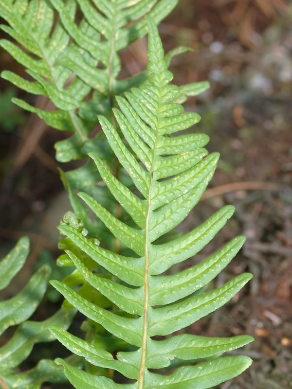

Tüpfelfarn
Polypodium vulgare
An Nagelfluh Felswänden der ??? wächst der Tüpfelfarn. Besondere Kennzeichen: Die punktförmigen Sporangien auf der Unterseite der fruchtbaren Wedel sind in Reihen beiderseits der Blattrippen angeordnet.
An Nagelfluh Felswänden der ??? wächst der Tüpfelfarn. Besondere Kennzeichen: Die punktförmigen Sporangien auf der Unterseite der fruchtbaren Wedel sind in Reihen beiderseits der Blattrippen angeordnet.